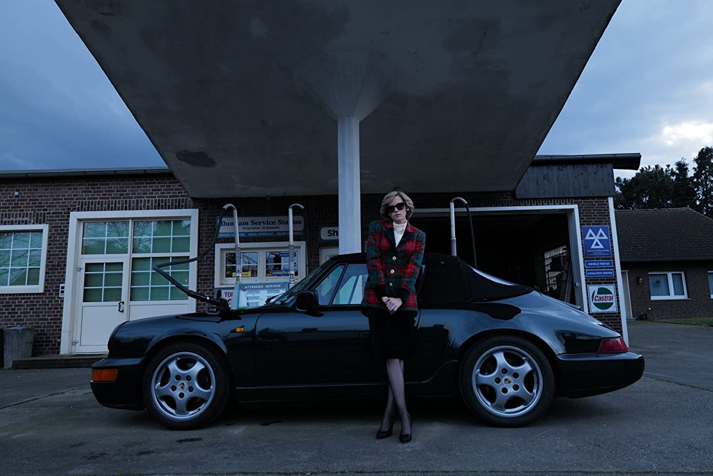
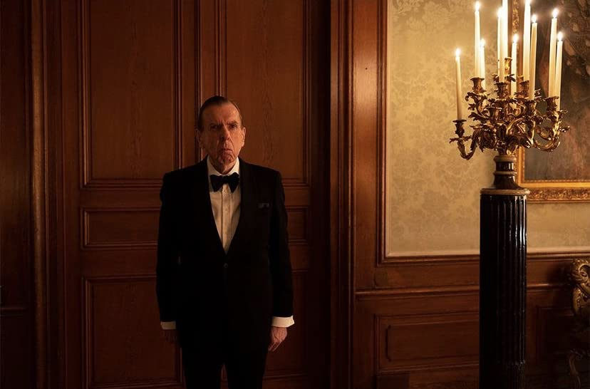
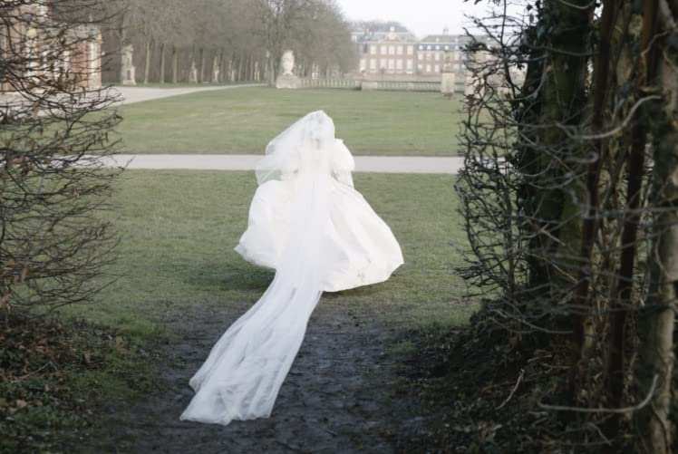

- Directed by Pablo Larrain
- Written by Steven Knight
- Starring
- Kristen Stewart
- Timothy Spall
- Sally Hawkins
Firstly, I must say, films don’t come any weirder than this one. Spencer, a reference to Princess Diana under her maiden name, drives rather haphazardly to Sandringham to spend the Christmas break with the Royal Family. We gather very quickly that she doesn’t want to attend the gathering, so she meanders through the countryside, stopping here and there, racing her automobile, in a dangerous way, looking vapid and forlorn. Finally, she arrives at the Sandringham house, but doesn’t go in as she first decides to go next door, to a house, where she, apparently, grew up. This means she has a strange encounter with a scarecrow, which occupies her time for quite a while before she is apprehended by security guards as she tries to enter the Sandringham grounds. She is mistaken for an intruder. If she’d been shot, at this point we wouldn’t have to sit through the rest of the movie.
 Her automobile is the only fast paced thing in this whole filmShe continues her strange behaviour inside the house, her lady in waiting, played by Sally Hawkins tries to placate her. This lady is all sympathy towards Diana and finally coerces her to dress. Diana refuses to wear the frock placed out for her, and go down to dinner, which is being delayed for Diana’s arrival, in the wrong frock, which causes some raised eyebrows. Before she enters the dining room, she indulges herself in some ballet and modern dance steps along a corridor. This takes up, a necessary few minutes of the running time.
The good part is that this lady in waiting, in a later scene, confesses her love for Diana. Somehow, they are on a beach and the lady-in-waiting is mad for her. About this point the Head Honcho, played by Timothy Spall, who must have been close by on the beach, sends this lady-in-waiting back to London to Diana’s chagrin. As you can see it really is a silly film.
 Timothy Spall sends most of this film staring blankly (doing his best Kristen Stewart impersonation?)Back at the dinner table, Diana has a couple of mouthfuls of food and then flies from the table to vomit into a toilet bowl. The Queen and Charles are not pleased.
Somehow Diana finds a biography of Anne Boleyn on her bed and begins to read it. It’s been placed there by the Head Honcho! Still with it? She falls asleep and immediately starts dreaming of herself as Anne Boleyn and she is convinced that Charles wants to behead her! She is wearing a magnificent pearl necklace.
The next morning the head of the household tries to pull her into line but our Diana’s having none of that. She, instead, goes to the kitchens, where she is very chummy with the head chef. She has more in common with him than any of the royals.
The family then attends the traditional Christmas service at Sandringham Anglican Church, where we see a ghost-like figure leering at Diana across the forecourt. We imagine this is Camilla. She gives Diana a death wish smile and disappears. Of course, all this could be in Diana’s imagination. Perhaps that is what it all means.
Back at the house, the traditional Christmas lunch is in progress. Soup is served. Somehow, Diana imagines she is Anne Boleyn again and somehow her soup bowl is full of the pearls from the necklace around Anne’s neck. She starts to drink the soup and the pearls and flees the table again to vomit. Still with me?
The men of the company set up a pheasant shooting afternoon. Charles has been tutoring William in the grand art of shooting birds. Diana appears at the shoot, looking vapid and forlorn, where she sits down on some steps and converses with a pheasant. She tells him how beautiful he is. The head of the household appears and sits with her. He says, don’t have too much sympathy for them, they’re a stupid bird. Just drive around the countryside and you’ll see them dead all over the roads. A few more dead is not going to make much difference.
Diana can’t cope, she runs to the shoot, drags her boys away, shoves them in her car and whisks them away to London, where they stop at McDonalds for hamburgers and chips.
 'Spencer' or 'Muriel's Wedding'? You'll never know!What can I say?
Kristen Stewart is up for an Oscar.
If Diana was this disturbed and stupid, I don’t think Charles could ever have been persuaded to marry her. And this Diana could never have captured the hearts of so many eligible men around the world.
Film-wise: It looks good at all times.
Star Rating: 2/5